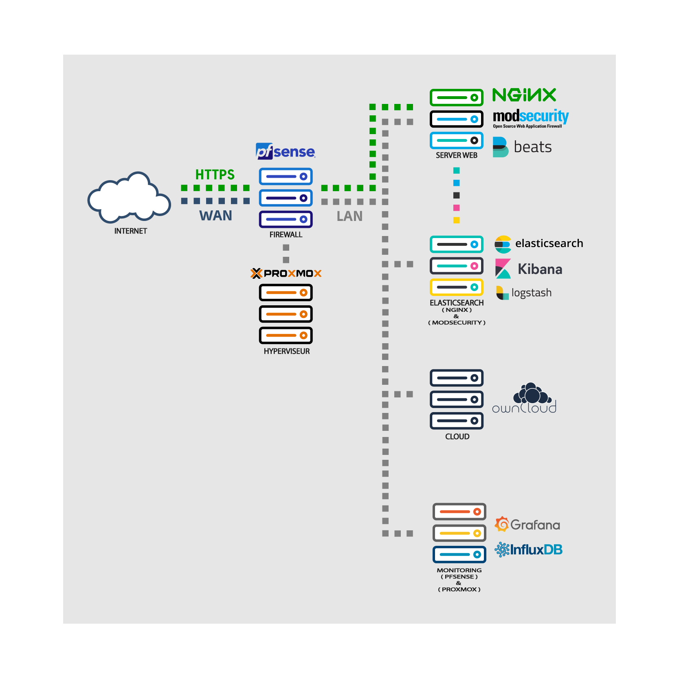

HOME LAB
root@pedro: ~
I will explain to you my environment that I created at home.
I have 1 server dell poweredge r610. On this server I made the updates of all firmwares and configurate all disks in raid 0 to have a single partition.
The first thing I had to do was create my hypervisor, for that I used Proxmox.
Why choose Proxmox VE?
The open-source platform Proxmox VE comes with zero license cost, provides full access to all functionalities, and increases the flexibility, security, and reliability of my IT infrastructure.
That allow the clustering, High Availability, backups, storage ... for free.
I also prefer proxmox because it has a simple interface and it's easy to use.
The diagram I created was this why?

To have a good base of structure I made this diagram that consists of :
- Create a vm that will be my firewall with two virtual network interfaces, one that will be connected to my private network and the other that will be the LAN.
To be able to effect this in a safe way I chose to use pfsense which is also a free and open source firewall and router.
In this LAN I installed several machines
- MONITORING
- CLOUD
- ELASTICSEARCH
- WEB SERVER
I chose to create a vm MONITORING that will monitoring pfsense and proxmox.
For that I used Grafana and InfluxDB.
Why I dont use elasticseach to monitoring all of my products?
For the sort time as I. I chose to use these two products to monitor pfsense and proxmox with templates already made. Saving a lot of time because with elasticsearch we have to create it by hand.
This machine aims to monitor the pfsense and proxmox being accessible only on my private network.
Connected to pfsense gateway. I needed to created an NAT PORT FORWARD to by accessible in my private home network.
VM CLOUD
I created a cloud because I needed to keep some documents accessible on all computers.
For this I opted for Owncloud which is very simple to use and easy to install.
To have it accessible I also had to create a NAT PORT FORWARD in pfsense as it is inside the LAN of pfsense like all other VMS without counting proxmox that is connected to the private internet.
ELASTICSEARCH
I chose to use elasticsearch because I searched the internet for the best methods and tools to monitor a vm and most of them talked about elasticsearch.
As I had never used this product, of course I had to study it and I found it quite good.
Elasticsearch has several tools but for what I needed I used only logstash and kibana.
Kibana is a tool for data visualization dashboard. It provides visualization capabilities on top of the content indexed on an Elasticsearch cluster. Users can create bar, line and scatter plots, or pie charts and maps on top of large volumes of data. being perfect for what I needed.
Logstash is a tool for collection information, analyze and stock of logs. how I wanted to retrieve my web server and WAF(web application firewall) logs. being perfect for what I needed to.
WEB SERVER
The web server will be the most important, having to protect it well because it will be connected to the world.
I installed my webserver on nginx and I installed a MODSecurity (WAF) being one of the best open source free to protect from the most web attacks.
As modsecurity and nginx do not have an interface for monitoring, this was the reason for using elasticsearch. Which has the function of recovering the log files and inserting them in a dashboard.
In order to send them I had to use filebeats which send me the logs to elasticsearch master in real time.
After having all these settings done had to generate a SSL KEY and after creating a NAT PORT FORWARD over HTTPS on my pfsense and also on my home router. Being accessible to the outside.
As it is only being accessible to the outside with IP I also needed to buy a domain name.
For the domain name to show my site I had to configure the dns server.
So this was my project for my home lab